Grease Pencil · Multimedia 12 · Sprint 7 extension · 4 lessons · what only Grease Pencil can do
THE 3D CAMERA.
Your drawings live in a 3D room with a real camera. Stand them in depth, move the camera through them, pull focus and light them: things a flat 2D program makes you fake by hand.
7 illustrated stagesFour lessonsDepth · truck · dolly · focus · lightDo 2D Animation Studio first
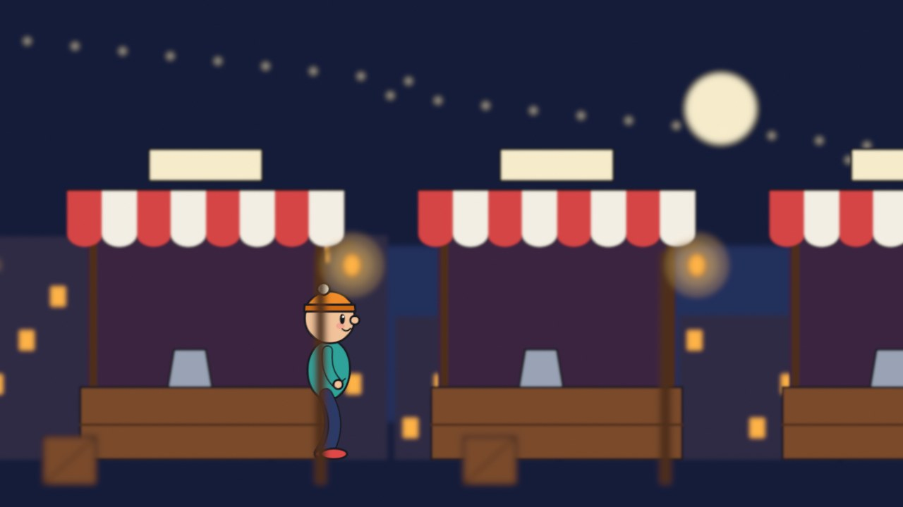
A real frame from the focus demo: drawings on five layers, the camera focused on the character.
Why animate 2D in Blender?
Because the camera is real. This is the answer to “why not just use a 2D program?”
My supports
Turn on any help you want. Your teacher may have set some for you. They change how the guide helps, not what is assessed.
Studio brief
Make a shot a flat program could not.
You can animate a character. Now put it in a place and film it. Split your scene into layers, stand them in depth, and use the camera the way a live-action crew would: move it, focus it, light the scene.
You will hand in
Your scene rebuilt as layers in depth (a screenshot from the side)
A truck and a push-in, with your dolly-or-zoom decision
A focus pull
A character lit by a light in the scene
Your shot, and the director’s version
Where the idea comes from
Disney’s animators built a multiplane camera in the 1930s: paintings on sheets of glass at different heights under a camera. Grease Pencil gives you the same thing, plus focus and light, for nothing.
Much of today’s “2D” animation is made this way: hand-drawn characters inside 3D sets, filmed with a virtual camera. It is also exactly how our virtual production work is filmed, so the camera skills you learn here carry straight into Blender, Unreal and the Jetset shoots.
Knowledge first
Why this works.
Depth gives parallax
Near things cross the frame faster than far things. Stand your layers apart and the camera does the rest.
Dolly is not zoom
A dolly moves through the space. A zoom magnifies the picture.
Focus directs the eye
The audience looks at what is sharp.
Light belongs to the place
A light in the scene changes every drawing that passes it.
What this assesses
Skills you will show.
Skill (sprint skill ID)
Where you show it
Acting and staging · AN-STG-01
Steps 2, 4, 5 and 7
Timing and spacing · AN-TIM-01
Steps 3 and 7
Critique and refinement · GD-CRIT-01
Step 7
Primary achievement evidence: the camera shot and the director’s change (step 7). Guided exercises and supports are recorded separately from achievement.
Session A · Lesson 1 · Grease Pencil
Your drawings are in a 3D room.
This is the thing Grease Pencil does that an ordinary 2D animation program does not. Every drawing is a real object in a real 3D space, in front of a real camera.
TODAYWatch and compare (10 min), look around the room (10 min), split and place your own layers (40 min).
01
See what depth does when the camera moves
Start here: read or listen to the theory deck (about 10 minutes, with checkpoint questions), then come back.
IN SHORTSame picture, same camera move; flat slides as one; layers in depth give parallax for free.
READ ALOUD
DOCUMENT: This guide SELECT: Nothing yet TOOLS / ROUTE: Play · compare
Play the clip. Both sides start as exactly the same picture. The camera then moves sideways by the same amount in both.
On the left, the whole picture slides across like a postcard. Nothing moves in front of anything else.
On the right, the lamp posts rush past, the stalls drift, the skyline creeps and the moon hardly moves. That is parallax.
Nothing was animated to get that. The right-hand version simply has its drawings standing at different distances from the camera.
Read the table under the clip. These are the reasons to do 2D animation in Blender instead of a flat program.
The same camera move over flat artwork and over layers placed in depth.
You want
A flat 2D program
Grease Pencil
Parallax when the camera moves
Move every layer by hand at a different speed
Stand the layers at different distances. Move the camera once.
A push-in that feels like walking forward
Scale the layers by hand
Move the camera forward.
A focus pull
Blur each layer by hand, frame by frame
Set the camera’s focus distance and key it.
A lamp that lights the character as it walks past
Repaint every drawing
Add a light.
A 3D set, prop or camera track with drawn characters
Import flat renders
They are already in the same scene.
STEP CHECKLIST
GLOSSARY
Parallax: Near things appearing to move faster than far things when the viewpoint moves
Multiplane: Artwork split onto layers at different distances from the camera
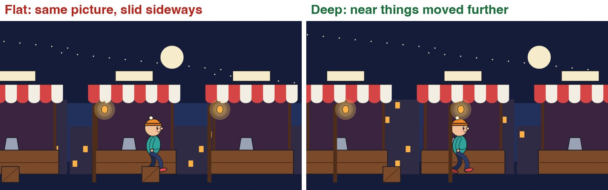
The last frame of each version. The camera has moved the same distance. On the right the near posts have travelled much further across the frame than the far buildings.
WHYYour eye judges distance from how fast things slide past. Give it that, and a drawing becomes a place.
CHECKYou can explain why the moon barely moves and the lamp posts move a lot.
FIXCannot see the difference? Watch one lamp post and the moon, and nothing else.
WORKED EXAMPLE · DIFFERENT OBJECTIn the demo the camera travels 6.8 units sideways over four seconds. Nothing else is keyframed except the walk.
STRETCH (AFTER THE CHECK PASSES)Find a multiplane shot in an old hand-drawn feature and count its layers.
Method basis: T1 · J1. Values and sequence are authored for this project.
02
Split your scene into layers and stand them in depth
IN SHORTOne object per depth; G Y to push back; S to scale back up; check from the camera and from the side.
READ ALOUD
DOCUMENT: Your 2D Animation Studio shot, saved as a new version SELECT: At least four Grease Pencil objects at different distances TOOLS / ROUTE: Add › Grease Pencil › Blank · G Y · S · numpad 0
Open your shot and save it as Camera_YourName.blend. Decide your layers from back to front: sky, far background, set, character, foreground.
Each depth needs its own Grease Pencil object (not just a layer). Add › Grease Pencil › Blank, name it, and draw or paste that part of the picture into it.
Leave the camera view (numpad 0 toggles it) and orbit with the middle mouse button. Your drawings are flat cards standing in a room.
Select the far background object. Press G then Y and move it away from the camera. In the camera view it shrinks.
Press S and scale it up until it fills the frame again. Do this for every layer: the further back, the bigger it must be.
Bring the foreground object towards the camera and scale it down the same way. Go back to the camera view: the picture should look the way it did before.
STEP CHECKLIST
GLOSSARY
Object: A separate thing in the scene with its own position
Camera view: Looking through the scene’s camera (numpad 0)
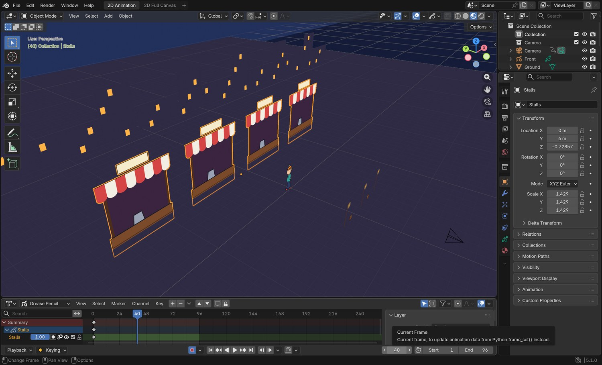
Real screenshot: the demo scene seen from outside the camera. The stalls (selected), the character, the lamp posts and the skyline are separate drawings standing at different distances. The camera is the small pyramid at the bottom right.
WHYPushing a layer back and scaling it up leaves the picture unchanged from one spot. The moment the camera moves, the difference appears.
CHECKFrom the camera the picture looks the same as before. From the side, the layers are spread out in depth.
FIXA layer vanished? It went behind another one, or beyond the camera’s Clip End. Select the camera and raise Clip End in the camera properties.
WORKED EXAMPLE · DIFFERENT OBJECTDemo distances from the camera: lamp posts 7.5, character 14, stalls 20, skyline 36, sky 74.
STRETCH (AFTER THE CHECK PASSES)Put a real 3D floor under the layers: Add › Mesh › Plane, scaled up.
Method basis: J1. Values and sequence are authored for this project.
Session B · Lesson 2 · Grease Pencil
Move the camera.
The camera is an object. You keyframe it like anything else. Two moves look alike and are not: pushing the camera in, and zooming the lens.
TODAYTruck (25 min), dolly against zoom (35 min).
03
Truck: keyframe the camera sideways
Recall first (from last lesson, no peeking):
What is parallax?
When you push a layer further from the camera, what must you do to keep the picture the same?
Why does each depth need its own object?
Say or write your answers, then check them against your file.
IN SHORTSelect camera; frame 1, I; last frame, G X, I; play; green = in-between, yellow = keyframe.
READ ALOUD
DOCUMENT: Camera_YourName.blend SELECT: A four-second sideways camera move that follows your character TOOLS / ROUTE: Select camera · I (insert keyframe) · Object tab
Go to frame 1. Click the camera in the Outliner (top right) to select it.
With the mouse over the viewport press I. Blender inserts a keyframe for the camera’s position. In the Object tab, Location turns yellow.
Go to your last frame. Press G then X and slide the camera sideways so it keeps your character in frame. Press I again.
Play. Your drawings stay on twos, but the camera moves on every frame, so it is smooth.
On any frame in between, the Location fields are green: Blender is working out the in-between for you.
STEP CHECKLIST
GLOSSARY
Truck: Moving the whole camera sideways
Keyframe: A stored value at a point in time
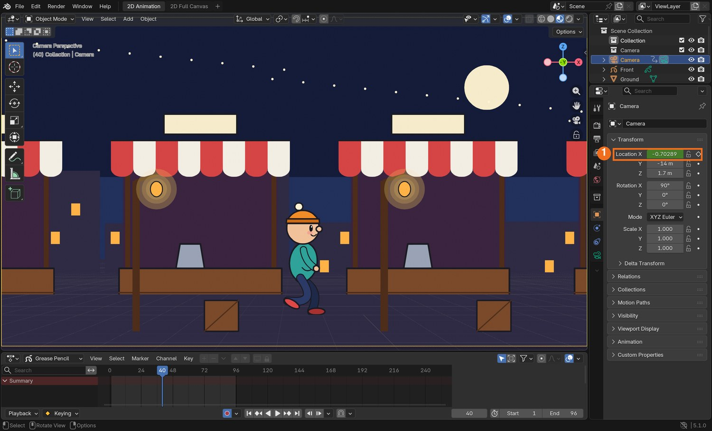
Real screenshot: the demo on frame 40 with the camera selected. Location X (1) is green: the camera is between its two keyframes.
WHYYou hand-draw the character because acting needs drawing. You let the computer in-between the camera because a camera is a machine.
CHECKA smooth sideways move with visible parallax between your layers.
FIXCamera move looks jerky at the start and end? That is good: Blender eases it in and out by default.
WORKED EXAMPLE · DIFFERENT OBJECTThe demo camera trucks from X −3.2 to X 3.6 over 96 frames.
STRETCH (AFTER THE CHECK PASSES)Add a tiny up-and-down drift to the camera so it feels hand-held.
Method basis: B4. Values and sequence are authored for this project.
04
Dolly or zoom? Choose on purpose
IN SHORTZoom = Focal Length keyed; dolly = camera Location Y keyed; dolly gives parallax, zoom does not.
READ ALOUD
DOCUMENT: Camera_YourName.blend SELECT: One push-in done two ways, and a decision TOOLS / ROUTE: G Y on the camera · Focal Length in the Camera tab
Play the clip. Both sides end the same size on the character. On the left the lens zoomed. On the right the camera moved forward.
Zoom: the picture is simply magnified. Every layer grows together. The lamp post that was in front of the character stays in front.
Dolly: the camera travels into the room. The near posts slide out of the sides of the frame and the background grows only a little.
Try the dolly: select the camera, key it on frame 1, go to the last frame, press G then Y, move it towards the character, key it.
Undo that and try the zoom: in the green Camera tab, hover over Focal Length, press I on frame 1, raise the value on the last frame and press I again.
Decide which one your shot needs, and write down why.
Zoom against dolly. Watch the lamp posts.
STEP CHECKLIST
GLOSSARY
Dolly: Moving the camera towards or away from the subject
Zoom: Changing the lens’s focal length without moving the camera
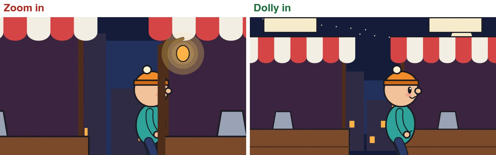
The last frame of each. Zoom keeps every layer lined up as it started. Dolly moves past the foreground.
WHYA zoom looks at something more closely. A dolly goes there. Audiences feel the difference even if they cannot name it.
CHECKA push-in on your character, and one sentence saying why you chose dolly or zoom.
FIXDolly goes through a foreground layer? Move that layer sideways a little, or start the camera in front of it.
WORKED EXAMPLE · DIFFERENT OBJECTThe demo dolly moves the camera 8.4 units forward. The matching zoom goes from 35 mm to about 87 mm.
STRETCH (AFTER THE CHECK PASSES)Dolly in while zooming out so the character stays the same size: the “vertigo” shot.
Method basis: B1 · T1. Values and sequence are authored for this project.
Session C · Lesson 3 · Grease Pencil
Focus and light.
A real camera cannot keep everything sharp, and a real lamp lights whatever walks under it. Both work on drawings.
TODAYRack focus (35 min), light the character (25 min).
05
Pull focus through your layers
Recall first (from last lesson, no peeking):
What is the difference between a dolly and a zoom?
Which one produces parallax?
What colour is a Location field on a keyframe? Between keyframes?
Say or write your answers, then check them against your file.
IN SHORTCamera: Depth of Field on, Focus Distance, low F-Stop; each GP object: Effects › Blur › Use Depth of Field; key Focus Distance.
READ ALOUD
DOCUMENT: Camera_YourName.blend SELECT: A rack focus from the foreground to your character TOOLS / ROUTE: Camera tab › Depth of Field · Effects tab › Blur
Play the clip. The focus starts on the lamp post, moves to the character, then to the stalls. Whatever is not in focus goes soft.
Select the camera. In the green Camera tab, tick Depth of Field and open it.
Set Focus Distance to the distance from the camera to your foreground. Set F-Stop very low (the demo uses 0.11) so the blur is strong.
Now tell each drawing to obey the camera. Select a Grease Pencil object, open the Effects tab, choose Add Effect › Blur, and tick Use Depth of Field. Repeat for every Grease Pencil object.
Press Z and choose Rendered to see it. Key Focus Distance on frame 1 (hover over it, press I).
Go to a later frame, change Focus Distance to your character’s distance, and press I. Play.
A rack focus across three layers of drawings.
Click by click (real Blender screenshots)
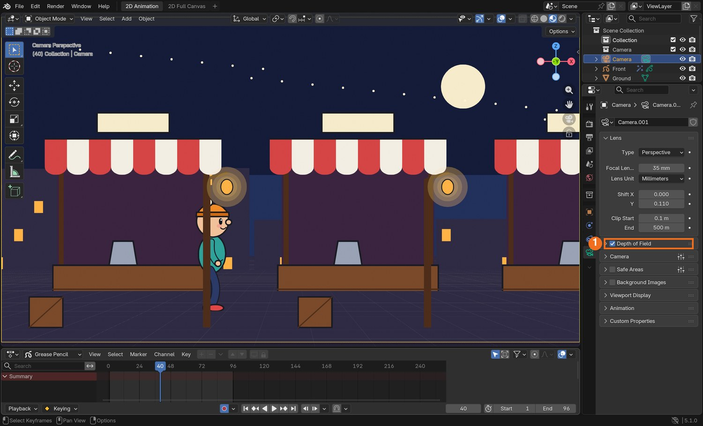
Real screenshot: the camera selected, Camera tab. Depth of Field (1) is ticked. Open it for Focus Distance and F-Stop.
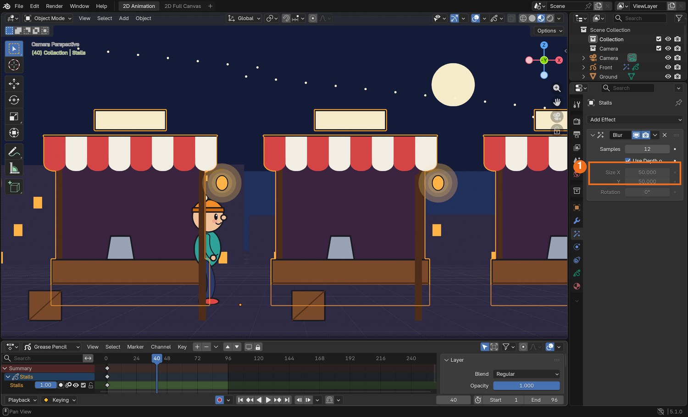
Real screenshot: the stalls selected, Effects tab. A Blur effect with Use Depth of Field ticked (1).
What went wrong when we built the demo: we first tried an F-Stop of 0.45, which is already impossible on a real lens, and saw no blur at all. Grease Pencil scenes are large, so the value has to be far lower. 0.11 gave the result in the clip.
STEP CHECKLIST
GLOSSARY
Depth of field: The range of distances that look sharp
Rack focus: Changing focus from one subject to another during a shot
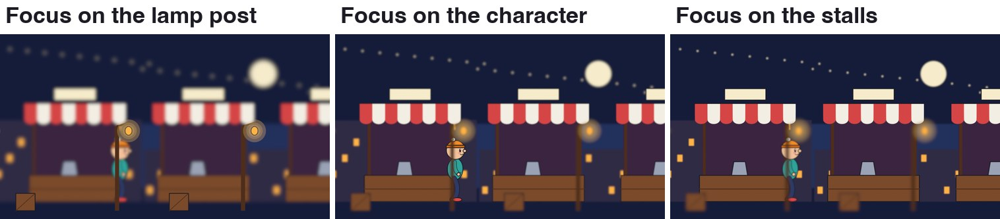
Three frames from the demo. Only the camera’s Focus Distance changed between them.
WHYFocus tells the audience where to look. Changing it during a shot moves their attention without a cut.
CHECKA shot where the sharp area moves from one layer to another.
FIXNothing blurs? Each Grease Pencil object needs its own Blur effect with Use Depth of Field ticked, and F-Stop must be low. A real 3D mesh blurs without the effect.
WORKED EXAMPLE · DIFFERENT OBJECTDemo focus distances: 7.5 (post), 14 (character), 20 (stalls).
STRETCH (AFTER THE CHECK PASSES)Use a Focus Object instead of a distance: the focus then follows your character automatically.
Method basis: B1 · B2. Values and sequence are authored for this project.
06
Light a drawing with a real lamp
IN SHORTLayer › Lights on; add a Point light at the drawn lamp; warm colour, power; a weak cool Sun as fill.
READ ALOUD
DOCUMENT: Camera_YourName.blend SELECT: Your character lit by a light in the scene TOOLS / ROUTE: Object Data tab › Layers › Lights · Add › Light › Point
Play the clip. On the left the character is flat colour all the way across. On the right it brightens and warms as it walks under the lamp.
Select your character. In the Object Data tab (the green squiggle), click a layer in the Layers list and tick Lights underneath. Do that for each of the character’s layers.
The character goes dark: it is now waiting for light.
Add › Light › Point. Move it to where your drawn lamp is: G to move, and check from the side as well as from the camera.
In the light’s own tab set a warm Color and raise Power until the character is lit as it passes.
Add › Light › Sun with a low Strength and a cool colour so the character is never fully black.
Layer lights off, then on.
Click by click (real Blender screenshots)
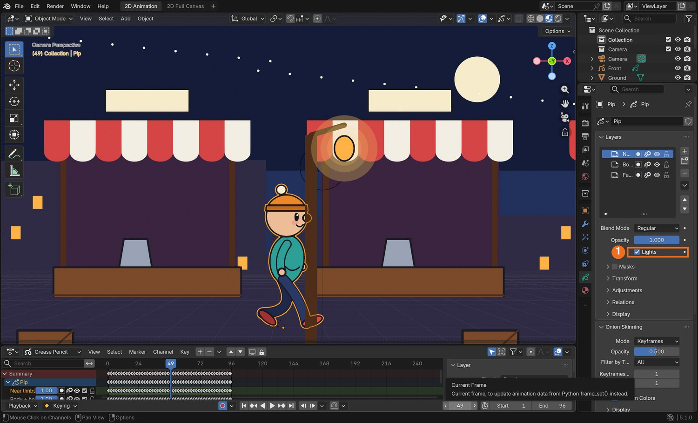
Real screenshot: the character selected, Object Data tab. With a layer chosen in the list, Lights (1) is ticked.
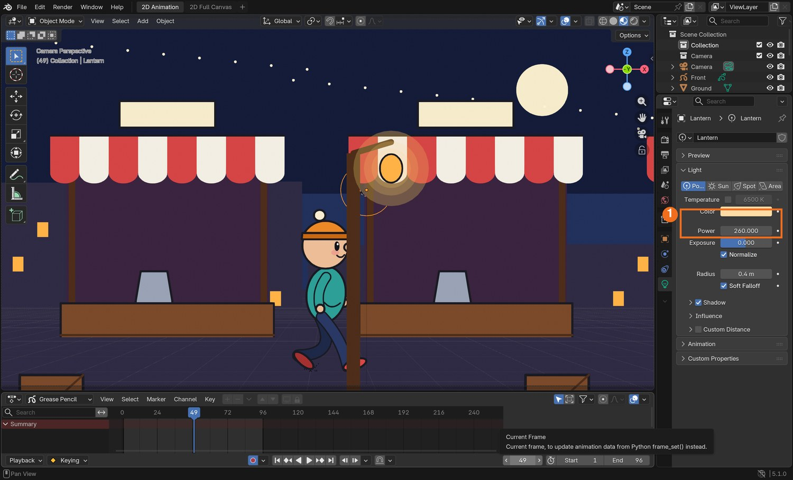
Real screenshot: the point light selected. Its Color and Power (1) are set in the light’s own tab.
STEP CHECKLIST
GLOSSARY
Point light: A light that shines in all directions from one spot
Fill light: A weak light that stops shadows going completely black
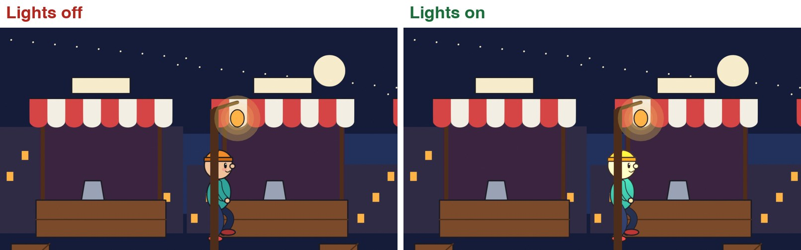
The same frame with layer lights off and on. No drawing was repainted.
WHYIn a flat program a lighting change means repainting every drawing. Here it means moving a lamp.
CHECKA character whose brightness changes as it moves through your scene.
FIXWhole drawing is black? There is no light near it yet. Too bright and washed out? Lower the light’s Power.
WORKED EXAMPLE · DIFFERENT OBJECTDemo values: point light 260 W, colour warm orange, 3 units above the ground; sun strength 0.35, pale blue.
STRETCH (AFTER THE CHECK PASSES)Key the lamp’s Power so it flickers.
Method basis: B3. Values and sequence are authored for this project.
Session E · Lesson 4 · Grease Pencil
Shoot it.
One shot that could not have been made in a flat program, then a change from the director.
Practical check: a camera shot, and the director’s note
Recall first (from last lesson, no peeking):
Which camera setting decides how blurred the out-of-focus layers are?
What must each Grease Pencil object have before it obeys the camera’s focus?
Which layer option lets a 3D light affect a drawing?
Say or write your answers, then check them against your file.
IN SHORTFour layers in depth; one camera move; focus pull or light; render; director’s card; say where the change belonged.
READ ALOUD
DOCUMENT: Camera_Shot_YourName.blend SELECT: A six-second shot with a camera move through layers in depth, then a changed version TOOLS / ROUTE: Everything in this guide · your own decisions
Plan one six-second shot of your character in its world. It must use at least four layers in depth and one camera move.
It must also use either a focus pull or a light that affects the character. Choose the one that helps tell the audience where to look.
Build it and render it: Render › Render Animation, as an MP4.
Your teacher gives you one director’s card from the table. Save a new version and make the change. Decide for yourself whether the answer is in the camera, the layers, the focus or the light.
In your evidence, say what you changed, and what you would have had to do in a flat 2D program to get the same result.
Card
The director says
1 · Closer
“Take me into the scene. I want to feel I walked there.”
2 · Look there first
“I should notice the background before I notice the character.”
3 · Later at night
“Same shot, but an hour later and lonelier.”
4 · Bigger world
“It feels like a stage set. Make the place feel deep.”
Independent evidence: the main achievement evidence for this tutorial.
STEP CHECKLIST
GLOSSARY
Shot: One continuous piece of film from one camera
Staging in depth: Arranging a scene from near to far so the eye is led through it
WHYThe skill is not the buttons. It is choosing where the camera is, where it goes and what is sharp, so the audience looks where you want.
CHECKAn original shot, a changed version, and a sentence comparing the work with a flat program.
FIXNot sure where the change belongs? Ask what the audience should look at, and when. (Independent step: the Coach can explain tools but not decide your shot.)
WORKED EXAMPLE · DIFFERENT OBJECTWorked example on a different shot: “I should notice the door first” was answered by starting the focus on the door and pulling to the character, not by redrawing anything.
STRETCH (AFTER THE CHECK PASSES)Bring in a 3D model as part of the set and let the camera move past it.
Method basis: T1 · B1. Values and sequence are authored for this project.
Before you submit
Student QA.
Evidence conversation
Keep it short and specific.
SENTENCE FRAMESI put ___ closest to the camera because ___. · I chose a ___ instead of a ___ because ___. · For the director’s card I changed the ___.
Sources and authorship
Method references.
T1 Thomas, F. and Johnston, O. The Illusion of Life: Disney Animation. The multiplane camera and staging in depth (background reading; not reproduced here). https://en.wikipedia.org/wiki/Multiplane_camera
J1 Blain, J. M. Blender 2D Animation: The Complete Guide to the Grease Pencil. Placing strokes in 3D space; stroke effects (background reading; not reproduced here). https://www.routledge.com/
Figures marked Illustration are drawn, not screenshots. Step values are starting points authored for this project. Draft for teacher review; not yet classroom-piloted.